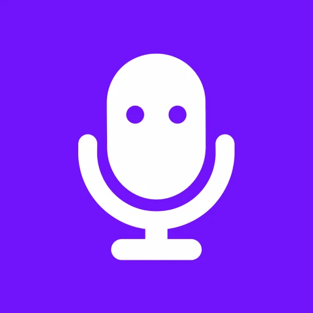

Speakboard
Dictado · iPhone y MacHabla. Se escribe.
Dictado por voz para iPhone y Mac que funciona en tu dispositivo. Tu voz nunca se sube a ningún servidor.
macOS 14+ · Apple silicon
Cómo funciona
Pulsa la tecla o el micrófono
En iPhone, cambia al teclado Speakboard y toca el micrófono. En Mac, mantén pulsada la tecla de dictado (Fn por defecto) y suéltala al terminar.
Habla con normalidad
La voz se reconoce en tu dispositivo, sin necesidad de conexión.
El texto aparece en cualquier app
Mensajes, correo, notas o el navegador: se inserta donde está el cursor. La app de Mac también quita muletillas como eh y um.
Tu voz no sale de tu dispositivo
El reconocimiento de voz se ejecuta en local, en tu iPhone y en tu Mac. El audio no se envía a ningún servidor.
Como no se procesa nada en la nube, el dictado también funciona sin conexión. Política de privacidad
Precios
Gratis
- Dictado ilimitado
- Sesiones de hasta 5 minutos
- Últimos 20 dictados en el historial
Pro mensual
- Sesiones de 20 minutos o sin límite
- Modelo Large turbo
- Historial completo
- Una cuenta en iPhone y Mac
Pro anual
- Sesiones de 20 minutos o sin límite
- Modelo Large turbo
- Historial completo
- Una cuenta en iPhone y Mac
- 3 días de prueba gratis
Una cuenta Pro funciona en iPhone y Mac. En iPhone te suscribes en la app. En Mac te suscribes en esta web tras iniciar sesión.
Preguntas frecuentes
¿Funciona sin conexión?
Sí. El reconocimiento se ejecuta en el dispositivo, así que no hace falta internet para dictar.
¿Qué idiomas admite?
Speakboard usa el modelo de voz Whisper, que admite unos 99 idiomas.
¿Una suscripción sirve para iPhone y Mac?
Sí. Pro va ligado a una cuenta y funciona en ambos dispositivos.
¿Puedo cancelar cuando quiera?
Sí. Cancela en cualquier momento y Pro sigue activo hasta el final del periodo pagado.
¿Se sube mi voz?
No. El audio se procesa en tu dispositivo y no se envía a ningún sitio.